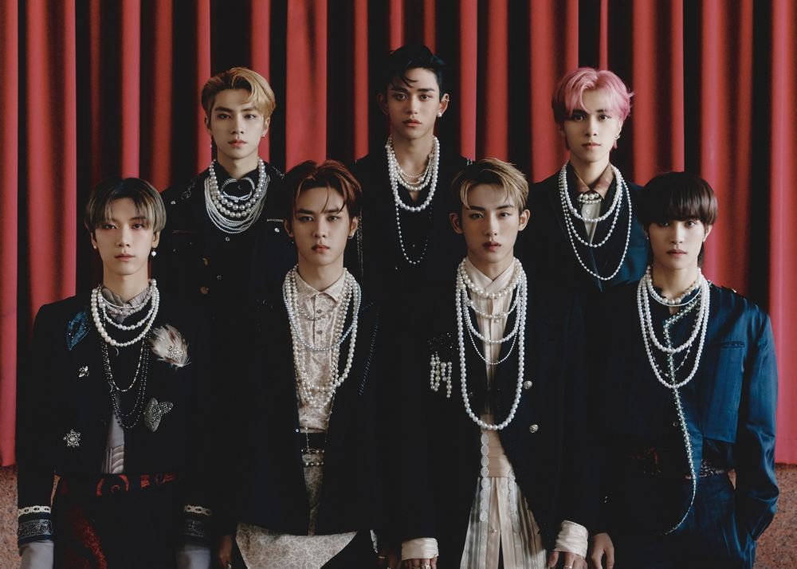

WayV
소개
WayV(威神V)는 2019년 1월 17일 데뷔한 LABEL V 소속 7인조 다국적 보이그룹이자 NCT에서 네번째로 데뷔한 유닛이며 중화권을 기반으로 활동한다. 데뷔 당시에는 모종의 이유로 NCT 합류 가능성만 열어놓은 채 NCT와 구분된 별개의 그룹으로 취급되었다. 이후 NCT 2020 프로젝트가 시작된 2020년 9월 21일부터 NCT의 공식적인 유닛으로 합류하였다. WayV는 멤버 전원이 SM Rookies 출신이다. SM엔터테인먼트에서 직접 프로듀싱을 하며, 공식 유튜브 채널의 관리 지역도 대한민국이고, 뮤직비디오도 첫 데뷔 시기부터 그룹 채널이 아닌 SMTOWN 채널에 업로드했다. 2020년 6월 발매된 첫 정규 앨범 'Awaken The World'부터 유튜브 영상 끝 부분에 SM엔터테인먼트 로고를 넣었고, SM엔터테인먼트 공식 홈페이지의 소속 뮤지션 목록에 WayV가 있으며, SM 공식 온라인 스토어의 소속 셀럽 목록에도 WayV가 있고 WayV의 굿즈를 판매하고 있다. 이로 인해 사실상 SM엔터테인먼트 소속 그룹으로 인정한 것을 알 수 있다.
멤버
96 쿤, 텐
97 윈윈
99 샤오쥔, 헨드리
00 양양
최근 활동
秘境 (Kick Back)
자세한 내용은 WayV 문서를 참고하십시오.